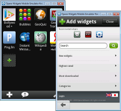

Opera Widgets SDK
Table of Contents
- Getting Started
- Widgets on Mobile
- Widgets on Desktop
- Appendix 1: Other Resources
- Appendix 2: APIs and Specifications
Getting Started
- Creating your first widget Creating an Opera widget is quick and painless, with just a few pointers in the right direction. This article details what a widget is and what you need to create one, and also takes you through creating, running and packaging a widget step by step.
- Packing and deploying your Opera widget When your widget is finished, what remains is to deploy it, and make it available for all to see. This article explains how.
- Opera widgets preference store The Opera Widgets Preference Store is where widgets store their settings and other data you want the widget to persist across sessions.
- Opera widgets and AJAX: Connecting to multiple servers Opera Widgets have a more liberal security model than web pages, giving widgets the ability to contact multiple servers and opening up many interesting possibilities.
Widgets on Mobile

- Mobile widget development process advice This articles provides some advice on developing mobile widgets, with special focus on mobile widgets.
- The Opera widget manager application The Opera Widget manager is a standalone application allowing you to organize and run widgets independently of the browser
- The Opera Widgets Mobile Emulator With Opera Mobile 10 for Windows, Linux and Mac we've included the Opera Widgets Mobile Emulator — a native application that can be run directly from your desktop machine, meaning developing mobile-optimized widgets has never been easier.
- Characteristics of widgets on mobile phones This document describes what considerations developers need to take into account when developing for mobiles, due to the characteristics specific to those devices.
- Adding a docked mode to your widgets Opera Widgets are required to be run on various devices under differing UI constraints. In some cases, the UI needs to be interactive and in others only informative. To support this, Opera Widgets can be viewed in different modes, each mode giving the widget a slightly different environment to render in.
- Remote debugging of widgets on mobile devices To debug widgets running on your mobile phone, you can run Opera Dragonfly (inside your desktop browser) then configure the Widget manager on the device to communicate with this instance. You can then view, stop and step into code in widgets running on the device from the desktop instance.
Perfecto Mobile and Opera have partnered in order to help you to easily test your widgets and websites on real mobile devices. As a widget developer, you now get 7 hours of remote access to the Perfecto Mobile Opera handset cloud free of charge, allowing you to test your widgets on a variety of mobile devices from the comfort of your Web browser.
Widgets on Desktop
- The Opera Widgets runtime for Desktop Opera Widgets are made using Web standards, the same technology used to build Web pages. This ensures that they work on all platforms and operating systems, as well as providing developers with a much shorter and simpler development cycle for creating desktop applications.
Appendix 1: Other Resources

- Opera widgets style guide Here we outline some of the key points to help you make the most of Opera Widgets by either developing new widgets or updating existing ones.
- Opera widget support notes This article describes which parts of the features of Opera Widgets are supported on different devices.
- Cross-device development techniques for widgets This article looks at techniques, code examples, and tips for doing cross-device development of widgets.
- Widget modes: docked and more On some platforms, the Opera Widgets runtime supports more than one mode for the widget to run in, for instance a mobile phone may support modes to show widgets one at a time in fullscreen mode, and to show multiple widgets, with each widget displayed in a separate slot on the screen.
- Optimizing Opera widget graphics for mobile and devices This article will explore a few simple techniques that help you optimize the graphics inside your Opera widget for mobile phones and devices with limited resources.
- Widget icon tutorial In this tutorial we show you how to make effective widget icons at different sizes, together with some Photoshop templates you can use as a basis for your own custom icons.
- Icon Creator tutorial Opera's Icon Creator has been created to ease the pain of creating widget icons, saving you a lot of time whether you are a graphic designer or a developer. Even better, the Icon Creator is itself a widget, meaning it's easy to install and use.
- Sample code and widget examples A zip file containing examples for you to examine, learn from and copy freely.
- Hands-on example: An HTML5 <audio> radio player In this article we will look at the <audio> element, starting with the basics, looking in detail at how it works across different browsers, and then build a radio player application that uses live audio from a streaming server.
- Introduction to Opera Dragonfly Opera Dragonfly is Opera's comprehensive set of developer tools, designed to give developers a lightweight-but-powerful application that provides effective mechanisms for web standards debugging and problem solving
Appendix 2: APIs and Specifications
- Opera widgets specification (4th edition) This document describes Opera Widgets 1.0, fourth edition, and covers all aspects of Opera Widgets, including the packaging format, the configuration file - config.xml - and scripting interfaces for working with widgets.
- Opera widgets - core DOM reference This document describes the widget object and extensions to the window object that are available to a widget through JavaScript, allowing you to communicate with the underlying widget runtime.
- Opera widgets security model The Opera widgets security model is initially very open to allow authors to easily create such services, however the widget author may change the config.xml file of the widget in order to restrict the widget’s access to protocols, hosts, and ports.
- File I/O API This API document describes the JavaScript bindings for accessing the local file system in Opera.
- Opera animation library Add a little sparkle to your widgets by creating some simple animations using the Opera Animation library.
- Widget chrome library Opera provides a library for the simple creation of chrome for widgets. This library makes it relatively painless to reuse code for widgets of different resolutions, defining different styles for each.
Appendix 3: Websites
- widgets.opera.com Publish your widgets on Opera’s widget repository. Anyone can upload widgets, but Opera Software tests all of them before they are made available to end users.
- Opera widgets forums The place to discuss Opera Widgets in the Opera Community forums.
- dev.opera.com Opera’s Web developer education site - here you will find documentation, tutorials and expert advice, as well as forums for discussing topics with fellow web developers.